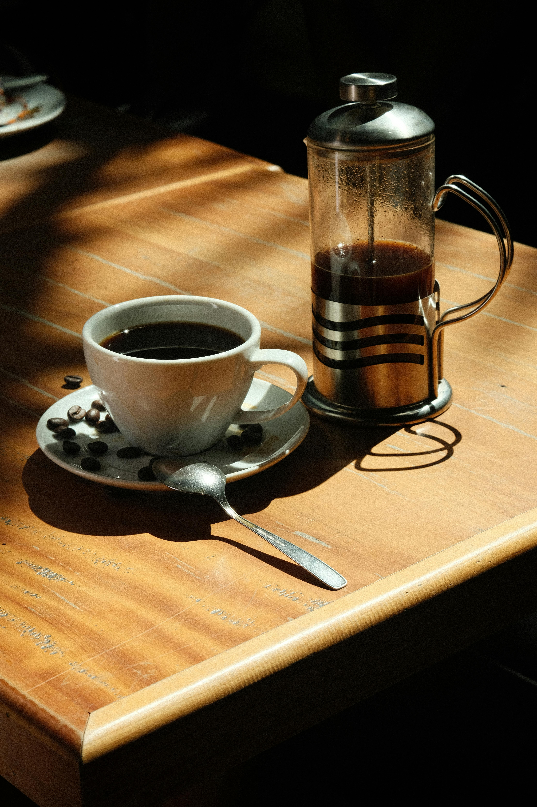

📖 Nosso Cardápio Selecionado

Todos os nossos cafés são extraídos com água filtrada por osmose reversa para garantir pureza total.
| Categoria | Bebida | Detalhes | Preço |
|---|---|---|---|
| Clássicos | Expresso Doppio | Extração curta, sabor intenso | R$ 9,00 |
| Com Leite | Flat White | Leite cremoso com dose dupla de café | R$ 14,00 |
| Especiais | Iced Vanilla Latte | Gelado com xarope de baunilha | R$ 18,00 |
| Comida | Toast de Abacate | Pão de fermentação natural | R$ 22,00 |